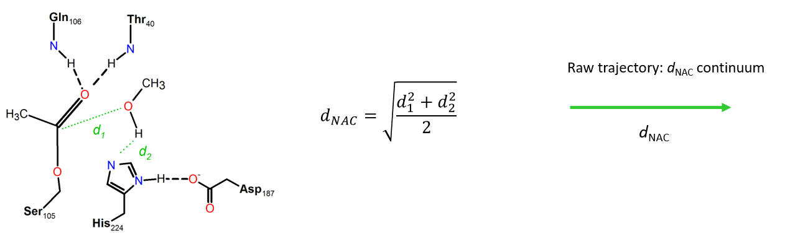

Analysis Modules¶
Featurize¶
Trajectories first need to be featurized with the *Featurized* module. Two methods are available and both are based strictly on distance metrics (angles, dihedrals, others can be coded): Both methods accept an arbitrary number of distances and outputs a dataframe that can be used for discretization.
Distance¶
Distances are calculated between all atom reference*selection pairs
Collective Variable (NAC)¶
The Collective Variable is a metric combinining two or more distances.
The Near Attack Conformation concept is the average root mean squared value of all defined distances.
{kind=link}
Created on Fri Feb 12 16:34:14 2021
@author: hcarv
-
class
source.Featurize.Featurize(systems, results)¶ Bases:
objectBase class to create a features object. Different featurization schemes can be coded.
- project: object
Object instance of the class “Project”.
- feature: object
Feature instance
-
dist(distances, start=0, stop=- 1, stride=1) → dict¶ Calculates distances between pairs of atom groups (dist) for each set of selections “dists” using MDAnalysis D.distance_array method. Stores the distances in results_dir. Returns the distances as dataframes.
Uses the NAC_frames files obtained in extract_frames(). NOTE: Can only work for multiple trajectories if the number of atoms is the same (–noWater)
- distanceslist
DESCRIPTION.
- startint, optional
DESCRIPTION. The default is 0.
- stopint, optional
DESCRIPTION. The default is -1.
- strideint, optional
DESCRIPTION. The default is 1.
- dict
A dictionary of distance.
-
static
distance_calculation(system_specs, measurements)¶ The workhorse function to calculate distances. Uses MDAnalysis. Retrieves infromation from two tuples passed by callers contained in “Parameters”.
- topologyTYPE
DESCRIPTION.
- trajectoryTYPE
DESCRIPTION.
- distancesTYPE
DESCRIPTION.
- startTYPE
DESCRIPTION.
- stopTYPE
DESCRIPTION.
- results_folderTYPE
DESCRIPTION.
- nameTYPE
DESCRIPTION.
- strideTYPE
DESCRIPTION.
- timestepTYPE
DESCRIPTION.
- TYPE
DESCRIPTION.
-
nac(distances, feature_name='feature', start=0, stop=- 1, stride=1, n_cores=- 1)¶ Calculates the d_NAC values from an arbitrary number of distance “sels” pairs. Increase “n_cores” to speed up calculations. Retrieves the d_NAC array and corresponding dataframe. Recieves instructions from multiprocessing calls. Makes calls to “nac_calculation” method. Operation is adjusted for multiprocessing calls, hence the requirement for tuple manipulation.
- distanceslist of tuples
A list of distance tuples of the kind [(ref1-sel1), …, (refN-selN)].
- feature_namestring
The name given to the featurized object. The default is ‘feature’.
- startint, optional
The starting frame used to calculate. The default is 0.
- stopint, optional
The last frame used to calculate. The default is -1.
- strideint, optional
Read every nth frame. The default is 1.
- n_coresint, optional
The number of cores to execute task. Set to -1 for all cores. The default is 2.
- dataframe
A dataframe containing all the d_NAC values across the list of iterables*replicas*pairs.
-
static
nac_calculation(system_specs, specs=(), results_folder='C:\\Users\\hcarv\\Documents\\GitHub\\SimFound_v2\\docs')¶ The workhorse function for nac_calculation. Retrieves the d_NAC array and corresponding dataframe. Recieves instructions from multiprocessing calls. Makes calls to “nac_calculation” or “nac_precalculated”. Operation is adjusted for multiprocessing calls, hence the requirement for tuple manipulation.
- system_specstuple
A tuple containing system information (trajectory, topology, results_folder, name).
- measurementstuple, optional
A tuple containing measurement information (distances, start, stop, timestep, stride).
- nac_df_systemdataframe
The d_NAC dataframe of the system
- nac_fileTYPE
DESCRIPTION.
- nac_df_systemTYPE
DESCRIPTION.
-
classmethod
plot(input_df, level='l3')¶
Discretize¶
Two discretization schemes are currently available, Uniform spherical shell discretization and Combinatorial user-defined spherical shell discretization. The Discretize object stores an internal copy of the provided feature data (DataFrame) and feature name (optional) to avoid passing project_system calls. Therefore, the module can take an externally-generated DataFrame, so long as the index information is consistent with the module operation.
Uniform spherical¶
{kind=link}
Discretization based in spherical shells generates spherical shells along a feature coordinate (i.e. if 1D). The module takes as input the thickness of the spherical shells and the limits of shell edges. Discretization can also be made for different subsets of the original feature DataFrame, by providing the controls of the start, stop and stride parameters.
Returns a shell profile DataFrame, containing the sampled frequency for each spherical shell (index) and for each feature.
Note: Subset time requires the user to check what are the frames present in the discretized (original featurized) DataFrames.
Combinatorial user-defined¶

Discretize, for each frame, which combinations of shells are occupied by all ligands in the system (one state per frame)
The concept of regions is applied to the 1D $d_{NAC}$ reaction coordinate, whereby a region is defined as a spherical shell along the $d_{NAC}$ radius
Set the shell boundaries (limits, thickness). The minimum (0) and maximum (max) value are implicit.
E.g.: shells (4.5, 10, 12, 24) corresponds to: 1. shell [0, 4.5[ (A) 2. shell [4.5, 10[ (P) 3. shell [10, 12[ (E) 4. shell [10, 24[ (S) 5. shell [24, max[ (B)
Labels labels of each region are optional but recommended (otherwise reverts to numerical). Number of labels is plus one the number of defined regions.
Created on Fri Feb 5 11:59:08 2021
@author: hcarv
-
class
source.Discretize.Discretize(data, feature_name='feature', results='C:\\Users\\hcarv\\Documents\\GitHub\\SimFound_v2\\docs')¶ Bases:
objectBase class to discretize features. Takes as input a dictionary of features, each containing a dictionary for each parameter and raw_data
-
combinatorial(shells, level=3, start=0, stop=10, stride=1, labels=None)¶ Function to generate combinatorial encoding of shells into states. Discretization is made based on combination of shells. Not sensitive to which shell a given molecule is at each frame. Produces equal-sized strings for all parameters. Static methods defined in tools.Functions are employed here.
- shellsarray
The array of shell boundaries.
- levelTYPE, optional
DESCRIPTION. The default is 3.
- startTYPE, optional
DESCRIPTION. The default is 0.
- stopTYPE, optional
DESCRIPTION. The default is -1.
- strideTYPE, optional
DESCRIPTION. The default is 1.
- labelsTYPE, optional
The shell labels (+1 shells). Method will resolve inconsistencies by reverting to numeric label.
- feature_dfdataframe
Dataframe of discretized features.
-
static
dG_calculation(input_df, mol='MeOH', bulk=30, 41, level=2, resolution=0.5, feature_name=None, describe=None, quantiles=[0.01, 0.5, 0.75, 0.99], results='C:\\Users\\hcarv\\Documents\\GitHub\\SimFound_v2\\docs')¶ Function to normalize NAC values according to theoretic distribution in a shpere with bulk concentration “c”. Takes as inputs “c”, a NAC histogram with standard errors and number of frames where NAC was calculated “length”. Calculations are made with the N_theo() function. The probability of NAC for each bin is P_nac and P_nac_err. The theoretical distribution of NAC at “c” is P_t. The value of bulk “c” is adjusted by fitting the P_nac to the bulk region “ranges_bulk” using curve_fit(). P_t_optimized uses the “c_opt” bulk concentration. dG is calculated from P_t_optimized. NOTE: The “ranges_bulk” should be carefully chosen for each system.
TODO: Fix mol requirement. Ask project.
-
static
plot(df, level=2)¶
-
static
shell_calculation(series_value, specs=())¶ The workhorse function for shell calculation. Returns a 1D histogram as a Series using parameters handed by specs (ranges, center of bins).
- series_valueTYPE
DESCRIPTION.
- specsTYPE, optional
DESCRIPTION. The default is ().
- hist_dfTYPE
DESCRIPTION.
-
shell_profile(thickness=0.5, limits=0, 150, level=2, start=0, stop=10, stride=1, n_cores=- 1)¶ Generate the discretization feature into shells=(min(“limits”), max(“limits”), “thickness”).
- thicknessTYPE, optional
DESCRIPTION. The default is 0.5.
- limitsTYPE, optional
DESCRIPTION. The default is (0,150).
- levelint, optional
The level for data agreggation. The default is 2 (molecule).
- labelsTYPE, optional
DESCRIPTION. The default is None.
- shellsTYPE, optional
DESCRIPTION. The default is None.
- n_coresint
The number of processes.
- TYPE
DESCRIPTION.
-
Markov State Models¶
Created on Thu Jan 21 18:52:02 2021
@author: hcarv
-
class
source.MSM.MSM(systems, data=None, discretized_name='discretized', results='C:\\Users\\hcarv\\Documents\\GitHub\\SimFound_v2\\docs')¶ Bases:
objectBase class to create Markov state models.
-
CKTest(model, lag, mt, mlags=5)¶ Function to calculate CK test. Takes as input name of the model, the variant (name and model), dictionary of lags the number of coarse grained states, and the defail*cg_states* and mlags.
-
ITS(lags)¶ Function to create ITS plot using as input ‘lags’ and the ‘discretized’ values. The corresponding ‘png’ file is checked in the ‘results’ folder. If found, calculations will be skipped.
-
MFPT(model)¶ Calculation of mean first passage times for all models. TODO: Method requires nested loops (i,j) to fill each cell of the MFPT matrix. TODO: Check deprecated for list compreehension method (does not work multiIindex df).
-
bayesMSM(lag, variant=False, statdist_model=None)¶ Function to calculate model based on provided lag time. Must be evaluated suitable lag time based on ITS. If no suitable lag is found, model calculation will be skipped. Accepts variants. Currently, only norm is defined.
-
static
flux(name, model, parameter_scalar=None, regions=None, labels=None, A_source=None, B_sink=None, value=None, top_pathways=2)¶ Function to calculate flux of model. A and B need to provided.
-
static
mfpt_filter(mfpt_df, scheme, feature, parameter, error)¶ Function to filter out MFPT values whose standard deviations are above error value. Default value of error is 20%
-
stationaryDistribution(model)¶ Calculates the stationary distribution for input model.
-